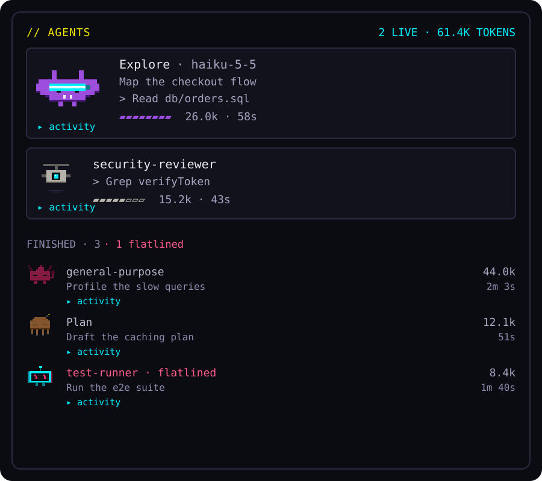
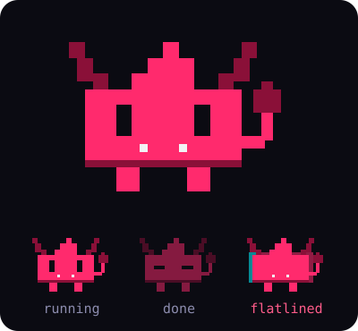
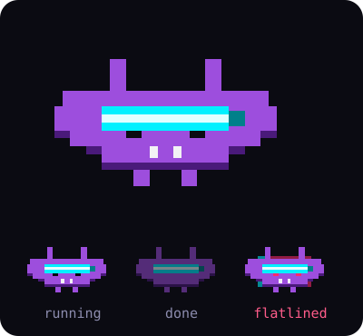
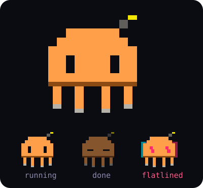
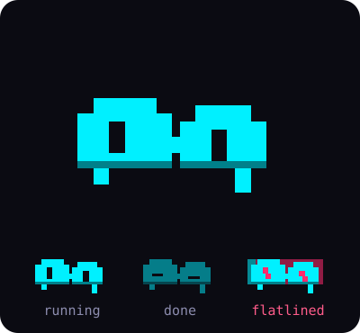
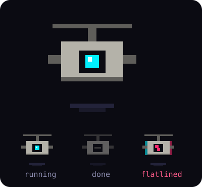
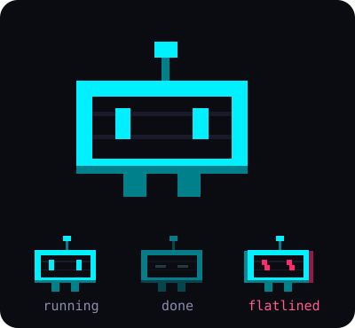
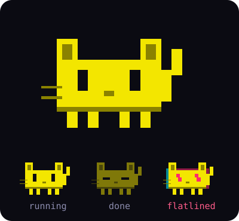
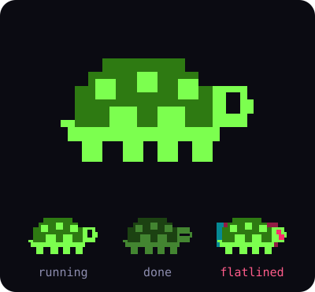

A Claude Code plugin
Your subagents,
as a crew.
See what every Claude Code subagent is doing, for how long, and exactly how many tokens it's burning. Each one gets a tiny pixel mascot. Free and open source.
/plugin install netrunner-agents --marketplace nocashflow/claude-netrunner-agents
Desktop app: + → Plugins → Add marketplace → nocashflow/claude-netrunner-agents
Live demo
Checkout feels slow and I want the auth middleware audited before Friday. Can you dig in?
On it, choom. Sending three agents in:
- one maps the checkout flow
- one audits the auth middleware
- one profiles the slow queries
Reply to Claude…

No more staring at a spinner. Know what every agent is up to.
Everything in one small pane.
It docks beside the chat and stays out of the way.
What it's doing, live
Each agent's tile shows the tool it's running right now:
Grep useSession,Read cart.ts,Bash npm test. You know who's stuck and who's cooking.Exact tokens
A token bar per agent, straight from the API. Same number Claude Code prints when an agent finishes.
Live timers
How long each one has been at it, counting up like the Background tasks panel.
▸ activity
One click shows an agent's last 8 tool calls, and later the start of its final report.
Done or flatlined
Finished agents fold into slim rows. Crashed ones glitch out in red, with the word flatlined, never colour alone.
Tiny when you want it
Minimize the pane and it becomes a one-line widget: the live crew and the total. Older finished agents fold into a strip of icons, so it never grows forever.
The 42-second tour.
Meet the crew.
Eight mascots, all drawn from scratch. Each one turns up for certain agent types.

Daemon
general-purposeA tiny horned imp. Background processes are literally called daemons.

Ping
ExploreA pixel bat. Sends out a ping and listens for what comes back.

Node
PlanA data-squid whose tentacles are network cables. Wired into everything.

Fork
forkA slime halfway through splitting in two, like a forked process.

Sentry
reviewers, audits
A hovering drone with one big lens. Keeps watch over reviews.

Byte
tests, builds, lint
A walking CRT terminal. Its face is the screen.

Proc
everyone else
A blocky street cat. Quick, curious, always poking at files.

Shell
everyone else
A turtle named after the command line. Slow, steady, never lost.
Dress up your crew.
Any agent type, any mascot, 7 colours, 9 bits of chrome. Try it here, then paste the command.
Explore · ping · violet · visor
/netrunner style Explore ping violet visor
Light on your machine.
A fun little pane shouldn't be what spins your fans up.
- ≤4redraws a second, max, and only while agents work
- 0animations: the mascots are still pictures
- 1stimer, only while an agent runs and the pane is open
- 0polling, network calls or dependencies
It watches. It never touches.
Every hook just observes and passes things straight through, so it can't block or change an agent, a tool call or a prompt. No network, files, processes, models or tools. What it shows stays in the session's memory, and secrets like API keys, tokens and passwords are masked to ••• before they're even stored.
Text is WCAG AA or better everywhere. Every mascot has a description for screen readers. No corpo spyware, no shady daemons. Just cute ones.
Read the security policy$ claude plugin validate plugins/netrunner-agents
hooks: session.start, command.run{netrunner},
agent.spawn, turn.start, tool.call,
turn.step, turn.complete, ui.close,
ui.render{Pane}
calls: $.clock.*, $.command.register,
$.state.*, $.store.*, $.ui.open,
$.ui.close, $.ui.resolve
✔ Validation passedJack it in.
Quicker than a ripperdoc, and nobody touches your spine.
- Desktop app: click + next to the message box, then Plugins → Add marketplace, enter
nocashflow/claude-netrunner-agents, then Add plugin → netrunner-agents. - Terminal: run the line below, say
yto the marketplace and pick the user scope so it works everywhere. - Send your crew in. The pane opens the first time Claude starts an agent, or any time with
/netrunner.
/plugin install netrunner-agents --marketplace nocashflow/claude-netrunner-agents
Needs Claude Code v2.1.325 or later. Best in the desktop app; in the terminal and VS Code the mascots become coloured blocks.
Questions.
- How can I see what my Claude Code subagents are doing?
- Install netrunner-agents. Every subagent Claude Code starts then shows up in an Agents pane with the tool it's running right now, its token usage and a timer. Click ▸ activity under an agent to see its last tool calls and, once it's done, its final report.
- How do I see token usage per subagent in Claude Code?
- Each agent's tile shows its tokens live: the size of its latest request (input, cache and output) as the API reported it. It's the same number Claude Code prints when an agent finishes, so they match.
- How do I install it?
- In the desktop app: + → Plugins → Add marketplace →
nocashflow/claude-netrunner-agents, then add netrunner-agents. In a terminal session:/plugin install netrunner-agents --marketplace nocashflow/claude-netrunner-agents. - Does it slow Claude Code down?
- It's built to be light. The mascots are still images, updates are batched so the pane redraws about 4 times a second at most (only while agents work), and the timer only ticks while an agent runs and the pane is open. With no agents running, it does nothing.
- Is it safe? Does it send my code anywhere?
- No network, file, process, model or tool access, and no dependencies. What it shows stays in the session's memory, secrets are masked before anything's stored, and it never changes or blocks what agents do.
claude plugin validatelists every call it makes. - Does it work in the terminal or VS Code?
- Yes, the pane and
/netrunnerwork there, but those can't draw pictures in a pane, so each mascot shows as a coloured block. - Can I change how the agents look?
- Yep. Any agent type can wear any of 8 mascots, 7 colours and 9 cosmetics, e.g.
/netrunner style Explore node acid visor. Your picks are saved and work in every chat. Try combos above. - How is it different from the Background tasks panel?
- They're independent and work fine together. Background tasks lists the tasks; this shows the same agents as a crew, with live tools, tokens, timers and activity.
Send your crew in.
Install netrunner-agentsFree and MIT licensed. Pairs well with my cyberpunk themes. Stay preem, choom.